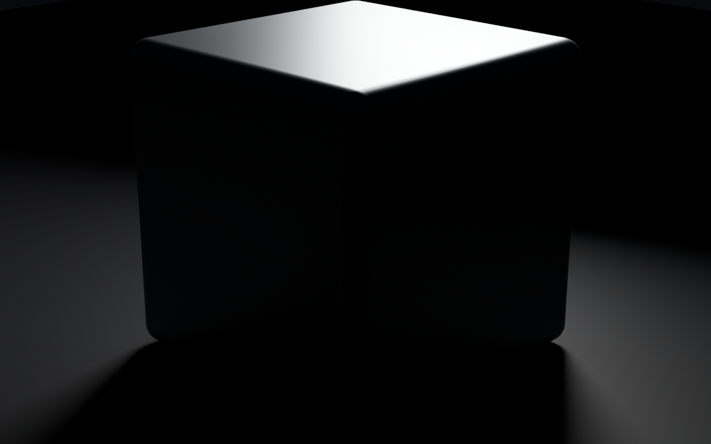
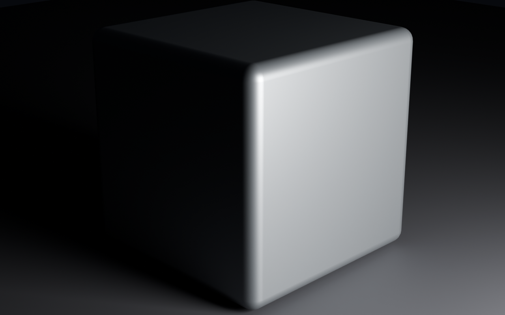
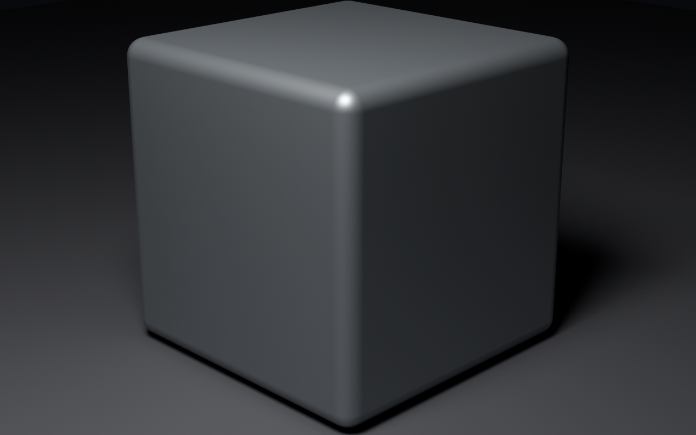

Sprint 0 light study · Blender 5.2.1 · Cycles/Metal · 1280×800 · 128 samples

Most atmospheric, least legible. Only the top plane and one edge survive; the form is nearly lost.
Mood, no object
Bright face against a black flank. Keeps mystery and a readable silhouette. The usable base.
Selected
Everything described, nothing withheld. Technically fine, and the default look worth avoiding.
Correct, inertThe prediction was that the back rim light would win, because the moodboard is full of things dissolving into darkness. It did produce the most atmospheric frame, and it also destroyed the object — there is almost nothing left to look at.
B is the one to build on. Darkness only does work when something stays legible inside it. That single rule is the whole of the Impossible artefact sprint, learned on a cube for free.
Worth noting: the bevel is carrying this, not the material. A 0.12 m bevel with hardened normals gives the highlight that reads as metal. Remove it and all three frames go flat.